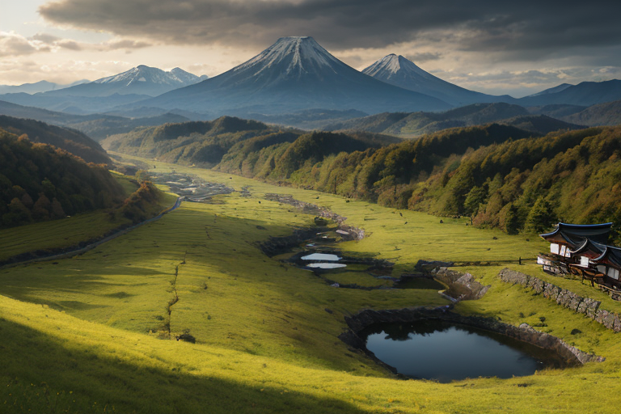
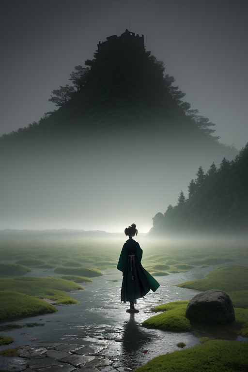
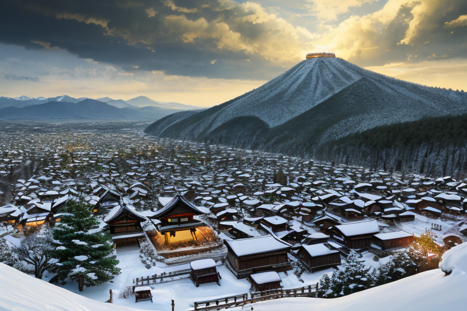
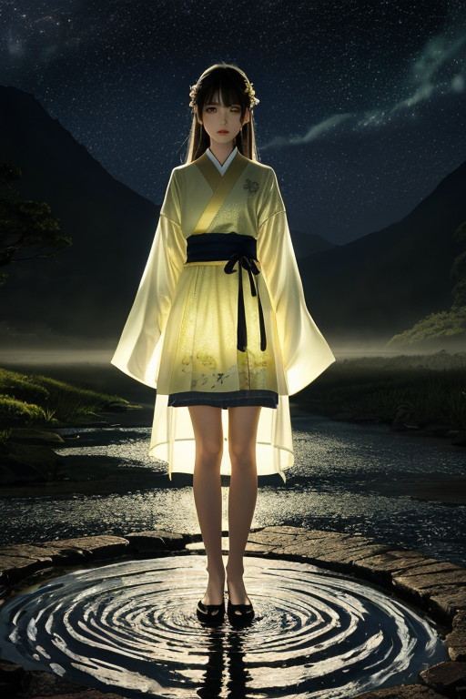
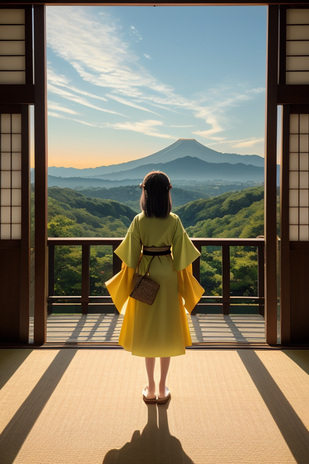

第一章 現実の岐阜
あなたはまだ気づいていない。この土地にも、王がいることを。
関ケ原町の曇り空の下、観光客がカメラを構えるその場所は、かつて天下分け目の戦いが繰り広げられた境目である。今は静かな田園が広がり、風がそよぐだけだ。しかし地中深く、日本の背骨を分かつ中央構造線は、今も微かにうごめいている。岐阜は、北アルプスの険しい山々と、濃尾平野の穏やかな台地が出会う、巨大な境目の上に立つ県だ。
その均衡点に、王は立つ。深緑と金の紋章をまとったギフリア・バランスは、郡上八幡の町を流れる清流のほとりで、無表情に地面に手を触れていた。掌から伸びる見えない糸は、フォッサマグナの巨大な断層系に絡みつき、絶え間ない地殻の「歪み」を感知する。彼の役目は、それを消すことではない。せり上がる圧力を、ほんの少し分散させること。境界でせめぎ合う力を、崩壊しない程度に調整することだ。
飛騨牛が草を食む山あいの牧場の下でも、高山の古い町並みを支える地盤の下でも、その作業は続く。王は感情を持たない、ただの調整装置だった。少なくとも、かつては。

第二章 歪みの兆候
郡上八幡の水の音は、いつもと少し違っていた。水路を伝わるせせらぎのリズムに、かすかな乱れが生じている。それは、遠く関ケ原の地で決着したはずの歴史の軋みが、四百年を経てなお地脈に残り、現代の断層活動に共鳴し始めた兆しだった。
ギフリアは城下町の石畳に立ち、目を閉じる。彼の知覚は、土地の記憶を遡る。慶長五年、東西の軍勢がぶつかり、天下の趨勢が決したあの日。勝敗が決する瞬間、地殻は微かに呻いた。膨大な人間の意志の衝突が、この「境目の国」の地質に、消えない痕跡を刻んだのだ。
その痕跡が今、活断層の動きを誘引しようとしている。王の手に集まる見えない糸は、ぴんと張り詰めた。妖精バラントが低声で報告する。「フォッサマグナ東縁、活発化の予兆。歴史の重みが、現代の歪みを増幅しています」
王は答えない。彼の内部で、ある変化が起きていた。無感情であるべき調整装置が、この土地の長い苦悩——境目に立ち続けることの孤独と緊張——を、初めて「理解」しようとしていた。それは感情ではない。認識の変容だ。岐阜城天守が戦火をくぐり抜けてきたように、この地は常に均衡を求められてきた。その重みが、今、王の核に染み入る。

第三章 王の葛藤
岐阜城天守から、濃尾平野と飛騨山地の境が一望できる。王はその視線の先、フォッサマグナの東縁に集中する歪みの増幅を感知していた。歴史の断層が、地質の断層と共鳴し始めている。関ケ原で東西の勢力が激突したように、今、大地の深部で均衡が破れようとしていた。
「介入すべきか」
バラントが問う。通常、王は迷わない。歪みを微調整するのみだ。だが今回は違う。大規模な地殻変動の「種」がここにある。これを抑制し、現状を維持するか。あるいは、ある程度の変動を許容し、長期的な安定をもたらす「変革」の機会と見做すか。
王は静かに郡上八幡の街を想った。水と共に生き、踊りで憂いを昇華してきた人々の営みを。白川郷の合掌造りが雪の重みに耐えるように、この地は常に圧力に適応してきた。
感情ではない。計算だ。しかし、その計算式に「この土地の在り方」という新たな変数が加わった。境目に立つとは、単に揺れを止めることではない。時には、新たな均衡をもたらすための揺れを、選択することかもしれない。
王は金色の深緑の紋章を微かに輝かせた。決断の時が近づいていた。

第四章 妖精との対話
郡上八幡の水路沿い、夜更けに響くのは櫓の音だけだった。バラントは水の流れを見つめながら語り始めた。
「我々の役割は、断層のエネルギーを『無くす』ことではありません。蓄えられた歪みが一気に解き放たれ、全てを破壊する前に、少しずつ、安全な形で解放することです」
彼の声には、長い年月をかけてこの地を見守ってきた者だけが持つ、深い諦念のようなものがあった。
「しかし、均衡王よ。時として、『安全な解放』だけでは、真の破綻を先送りにするだけなのです。関ケ原も、白川郷の集落形成も、大きな『境目』でした。そこには、古い均衡を一旦崩すという、痛みを伴う選択があった」
ギフリスが山影から現れ、低い声で続けた。
「今、この列島の歪みは、単なる断層のそれではありません。人々の心の軋み、社会のひずみが、地殻のそれと共鳴し始めています。従来の微調整では、もはや保てない均衡が、そこにあります」
バラントは王を見た。
「あなたは問うています。境目でどう立つか、と。我々は答えます。時には、自らその境目を揺るがす覚悟が、必要だと」

第五章 微調整と余韻
岐阜城天守からの眺めは、濃尾平野を一望に収めていた。かつて天下分け目の戦いが行われた関ケ原は、今は静かな田園の広がりに過ぎない。均衡王ギフリア・バランスは、その目を閉じた。彼の内側で、王国の全妖精たちの意志が一点に収束する。断層緩衝のバラント、断層波緩衝のギフリス、そして白川郷の合掌造りを守る者、郡上八幡の踊りに宿る者、飛騨牛の牧草地を見守る者まで。全ての力が、王の一点に集約された。
彼らが選んだのは、一つの巨大な歪みの「移譲」だった。東海地方の深部に蓄積されつつあった破局的エネルギーを、自らの王国の基盤である中央構造線の一部へと、限界を超えて誘導する。歴史を一度だけ曲げる代償として、王国の中核をなす妖精たちの多くが、その存在を散逸させることになる。
震動は起こった。しかしそれは、予測されていた規模よりも一段階小さく、数秒早く終わった。そのわずかな差が、多くの命を、多くの日常を、歴史の流れそのものをかすかに変えた。
天守にただ一人残った王は、深緑と金の紋章が徐々に色褪せていくのを感じた。彼は初めて、妖精たちの名を呼び、そして「ありがとう」という感情の言葉を口にした。静かな余韻が、境目の町を包む。
あなたの町にも、王がいる。